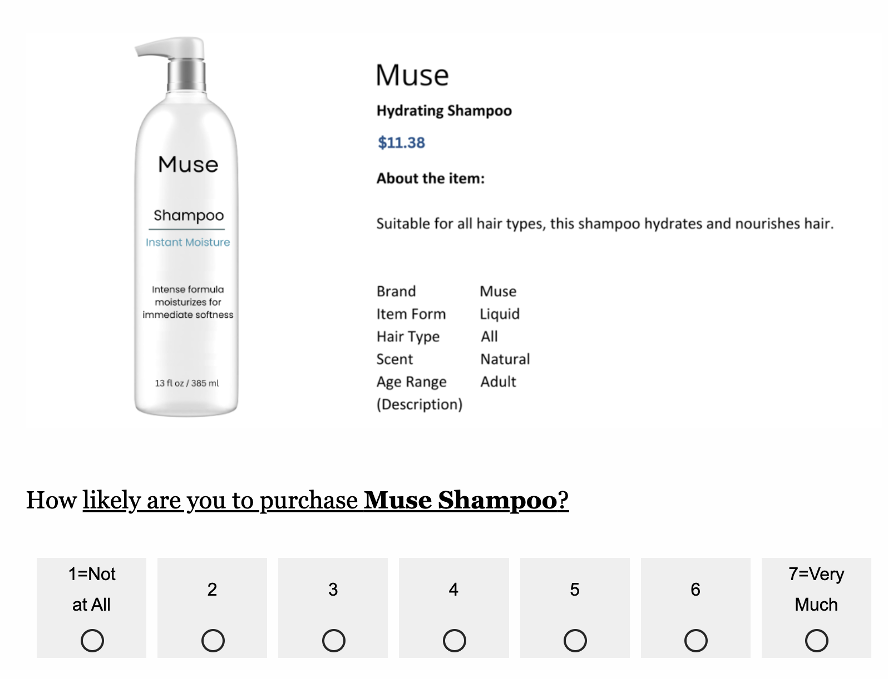

Experimental Design
Surveys and online experiments testing how context shapes consumer perceptions and purchase intent.

About
My academic experience in consumer behavior theory shapes how I approach research, from understanding consumer psychology, designing surveys to analyzing data. Across retail, e-commerce, and recommendation systems, I connect theory with real consumer behavior, identify the patterns that matter, and explain what they mean for marketing, product, and customer experience teams.
Surveys and online experiments testing how context shapes consumer perceptions and purchase intent.
ANOVA, regression, and repeated-measures analysis used to identify patterns in behavioral data.
SONA study approvals, participant-pool coordination, researcher support, and streamlined operations.
Consumer behavior theory applied to research questions, hypotheses, measurement, and interpretation.
Literature reviews, research papers, and project reports tailored to academic and business audiences.

Retail · Consumer insights


E-commerce · Marketing analytics
Small business · Content marketing
Research operations · Data quality

Published book chapter
Photography · Personal work
MSc in Business Research · GPA: 3.9/4.0
MSc in Marketing · GPA: 3.9/4.0
BA in Business Administration · Minor in Psychology
Contact